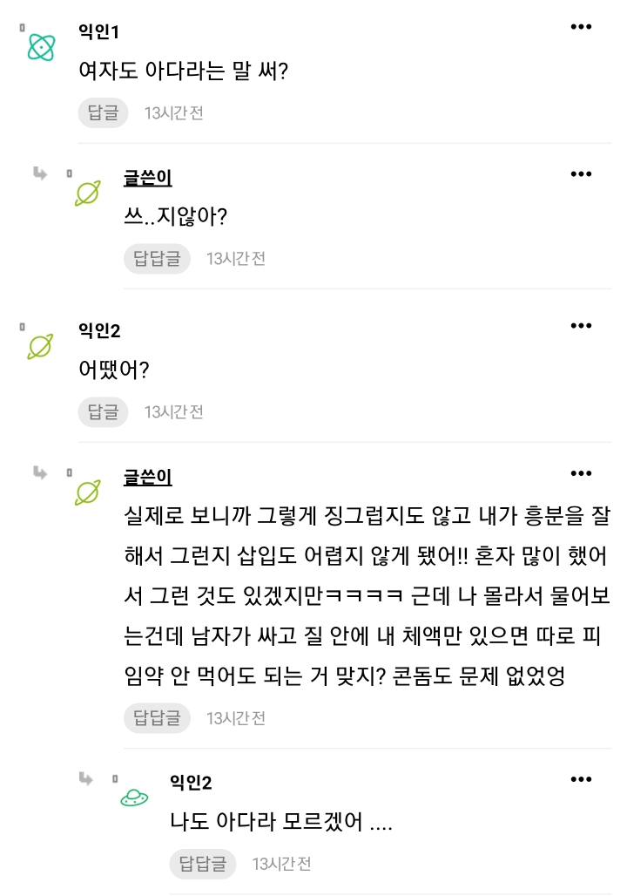
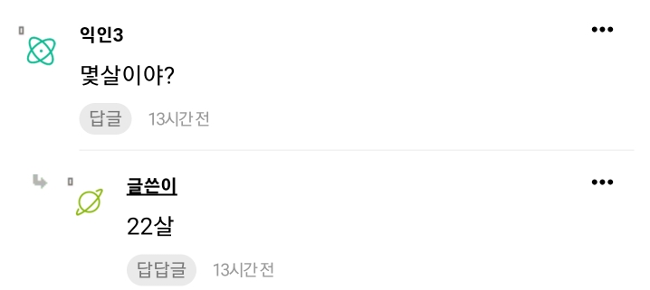
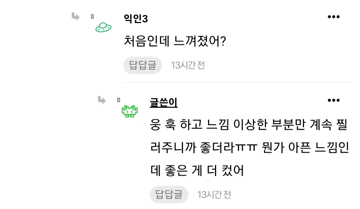
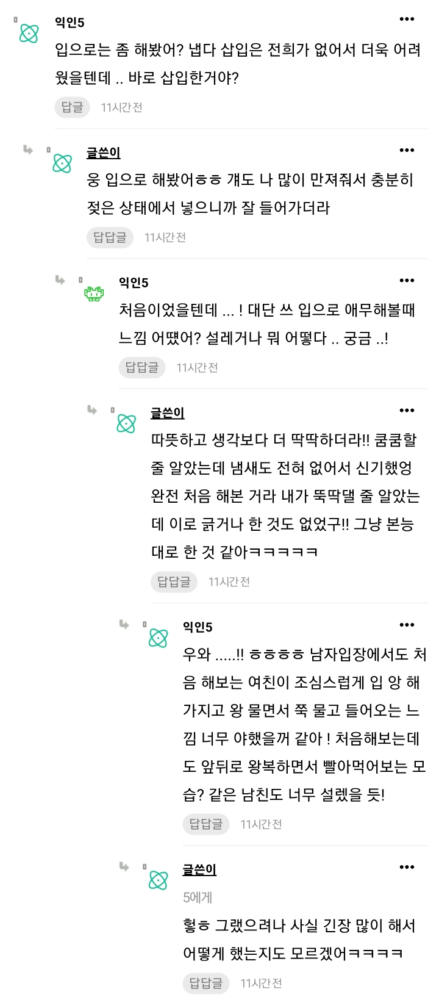

68 · 7 · 2 시간 전 · 원문




인스티즈 마성의 방에서 퍼옴
수집 당시 댓글 7개
박데방 · 1 시간 전
ㅋㅋㅋㅋㅋ 내용에 맞지 않게 문체는 순수발랄하냐
nesy · 1 시간 전
ㅋㅋㅋ
BTS그래미수상 · 1 시간 전
22살 숫처녀라니.. 좋은 거 먹었네.. 존나 부럽다 시발
에너지보존법칙 · 51 분 전
ㅡ.ㅡ;
프로틴2배 · 30 분 전
우리딸 장하다
애니브리띵 · 21 분 전
비처녀
구라치면화냄 · 6 분 전
ㅋㅋㅋㅋㅋ 내용에 맞지 않게 문체는 순수발랄하냐